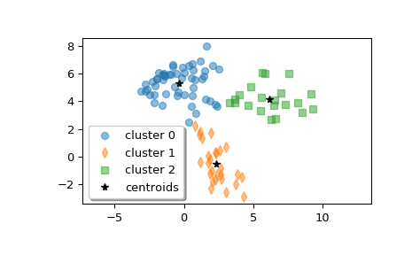

scipy.cluster.vq.kmeans2¶
-
scipy.cluster.vq.kmeans2(data, k, iter=10, thresh=1e-05, minit='random', missing='warn', check_finite=True)[source]¶ Classify a set of observations into k clusters using the k-means algorithm.
The algorithm attempts to minimize the Euclidean distance between observations and centroids. Several initialization methods are included.
- Parameters
- datandarray
A ‘M’ by ‘N’ array of ‘M’ observations in ‘N’ dimensions or a length ‘M’ array of ‘M’ 1-D observations.
- kint or ndarray
The number of clusters to form as well as the number of centroids to generate. If minit initialization string is ‘matrix’, or if a ndarray is given instead, it is interpreted as initial cluster to use instead.
- iterint, optional
Number of iterations of the k-means algorithm to run. Note that this differs in meaning from the iters parameter to the kmeans function.
- threshfloat, optional
(not used yet)
- minitstr, optional
Method for initialization. Available methods are ‘random’, ‘points’, ‘++’ and ‘matrix’:
‘random’: generate k centroids from a Gaussian with mean and variance estimated from the data.
‘points’: choose k observations (rows) at random from data for the initial centroids.
‘++’: choose k observations accordingly to the kmeans++ method (careful seeding)
‘matrix’: interpret the k parameter as a k by M (or length k array for 1-D data) array of initial centroids.
- missingstr, optional
Method to deal with empty clusters. Available methods are ‘warn’ and ‘raise’:
‘warn’: give a warning and continue.
‘raise’: raise an ClusterError and terminate the algorithm.
- check_finitebool, optional
Whether to check that the input matrices contain only finite numbers. Disabling may give a performance gain, but may result in problems (crashes, non-termination) if the inputs do contain infinities or NaNs. Default: True
- Returns
- centroidndarray
A ‘k’ by ‘N’ array of centroids found at the last iteration of k-means.
- labelndarray
label[i] is the code or index of the centroid the ith observation is closest to.
See also
References
- 1
D. Arthur and S. Vassilvitskii, “k-means++: the advantages of careful seeding”, Proceedings of the Eighteenth Annual ACM-SIAM Symposium on Discrete Algorithms, 2007.
Examples
>>> from scipy.cluster.vq import kmeans2 >>> import matplotlib.pyplot as plt
Create z, an array with shape (100, 2) containing a mixture of samples from three multivariate normal distributions.
>>> np.random.seed(12345678) >>> a = np.random.multivariate_normal([0, 6], [[2, 1], [1, 1.5]], size=45) >>> b = np.random.multivariate_normal([2, 0], [[1, -1], [-1, 3]], size=30) >>> c = np.random.multivariate_normal([6, 4], [[5, 0], [0, 1.2]], size=25) >>> z = np.concatenate((a, b, c)) >>> np.random.shuffle(z)
Compute three clusters.
>>> centroid, label = kmeans2(z, 3, minit='points') >>> centroid array([[-0.35770296, 5.31342524], [ 2.32210289, -0.50551972], [ 6.17653859, 4.16719247]])
How many points are in each cluster?
>>> counts = np.bincount(label) >>> counts array([52, 27, 21])
Plot the clusters.
>>> w0 = z[label == 0] >>> w1 = z[label == 1] >>> w2 = z[label == 2] >>> plt.plot(w0[:, 0], w0[:, 1], 'o', alpha=0.5, label='cluster 0') >>> plt.plot(w1[:, 0], w1[:, 1], 'd', alpha=0.5, label='cluster 1') >>> plt.plot(w2[:, 0], w2[:, 1], 's', alpha=0.5, label='cluster 2') >>> plt.plot(centroid[:, 0], centroid[:, 1], 'k*', label='centroids') >>> plt.axis('equal') >>> plt.legend(shadow=True) >>> plt.show()
